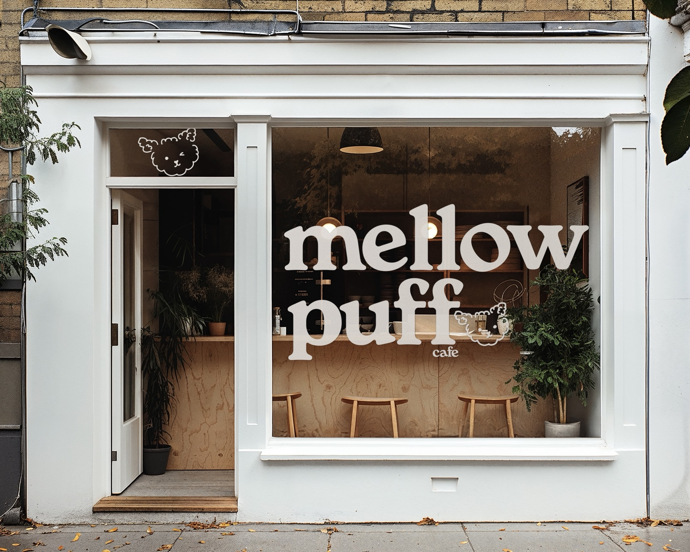
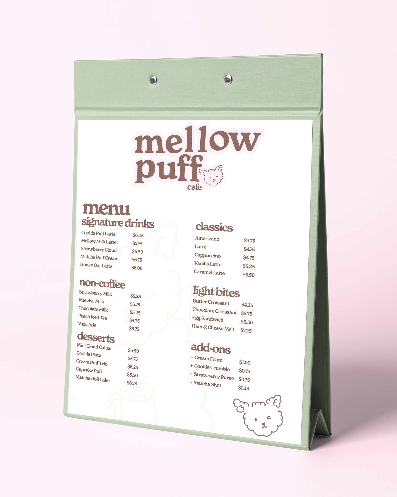
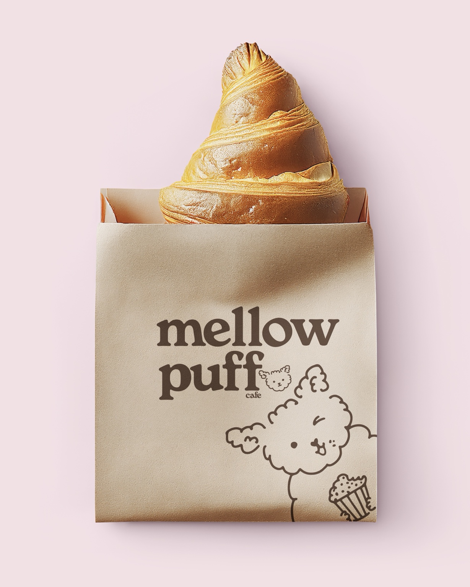
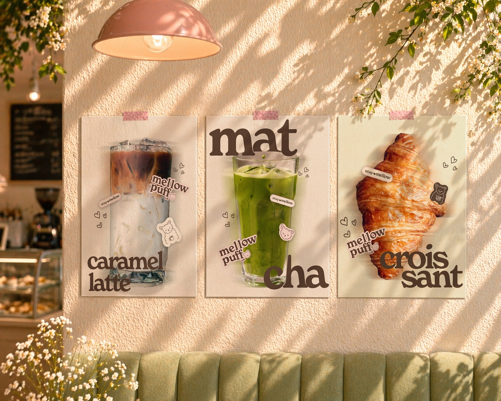
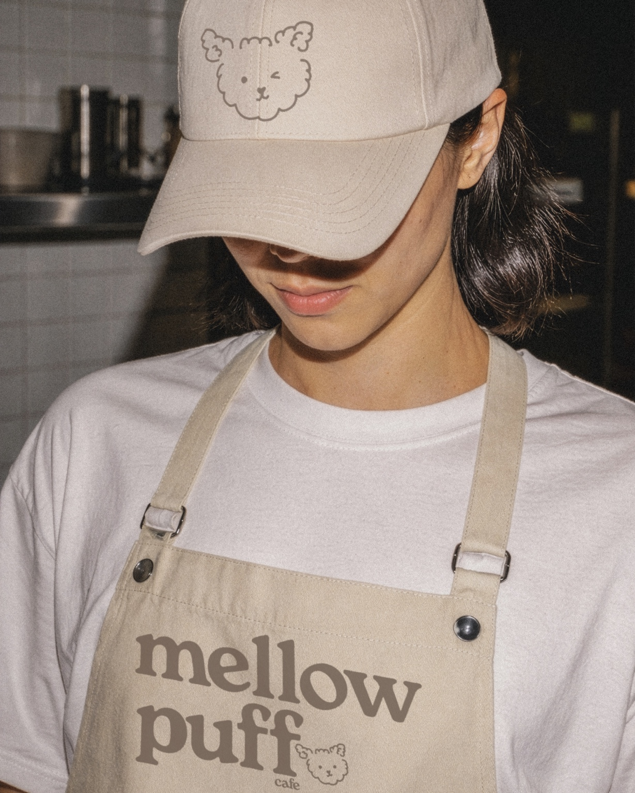
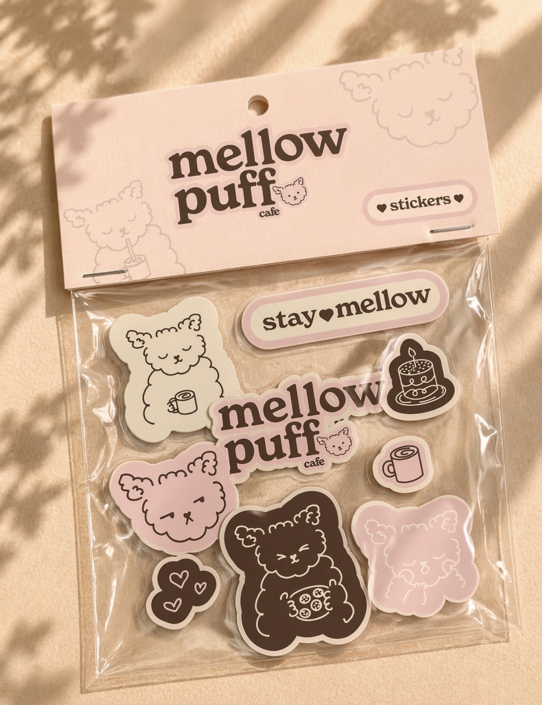
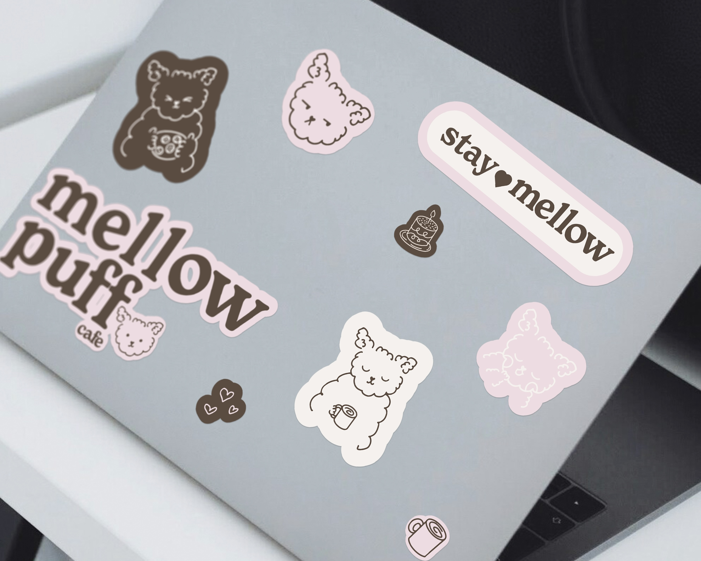
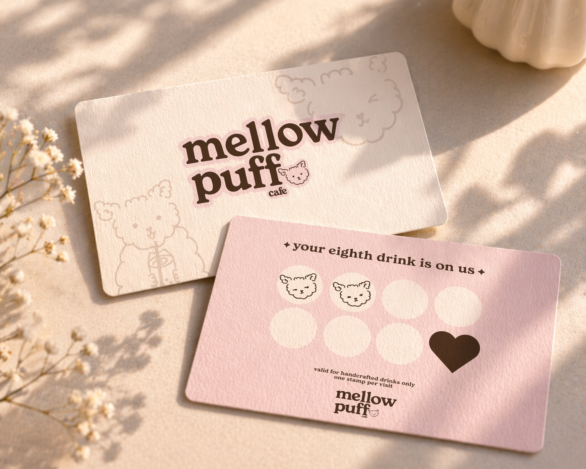

A warm, character-led identity designed to make an everyday coffee run feel like a small comfort ritual.
Scope
Brand strategy Visual identity Illustration
Deliverables
Packaging Environmental Digital + campaign

the project
Cute, cozy, and built to stick.
Mellow Puff Cafe is a self-initiated brand identity for a neighborhood cafe centered on comfort, small rituals, and personality. The goal was to create something sweet without feeling childish—and cozy without disappearing into the sea of beige cafe branding.
The final system pairs an expressive, soft-edged wordmark with a fluffy mascot whose different moods bring the brand to life. Together, they give Mellow Puff enough charm to feel instantly familiar and enough structure to work across a full cafe experience.


Behind the work
From a feeling to a full little world.
01
Finding the feeling
I started with the experience rather than the logo: slow mornings, warm pastries, a favorite drink, and the kind of cafe customers want to make part of their routine. “Stay mellow” became the emotional center of the brand and helped define a voice that feels gentle, playful, and welcoming.
02
Building the system
Chocolate brown softens the identity where black would feel too sharp, while blush pink and muted sage keep the palette warm and recognizable. The nostalgic serif wordmark gives the brand weight; the hand-drawn puff character adds movement, humor, and a human touch.
03
Making it live
I tested the system beyond a single logo—across storefront signage, menus, pastry packaging, loyalty pieces, staff uniforms, campaign posters, stickers, and digital touchpoints. The mix of bold type, quiet surfaces, and flexible character art keeps every application connected without making them identical.





end of project ♡
More personality. More staying power.
STAY MELLOW ♡ COFFEE, COMFORT + CHARACTER ☆ STAY MELLOW ♡ COFFEE, COMFORT + CHARACTER ☆